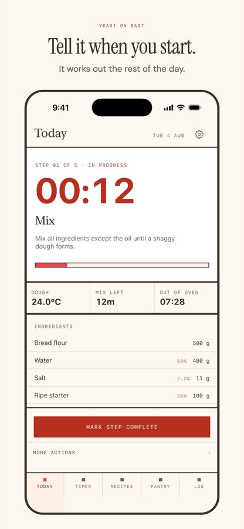
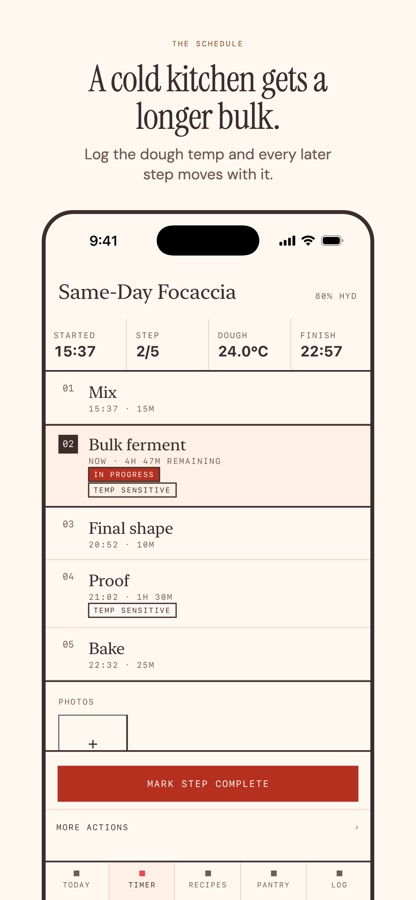
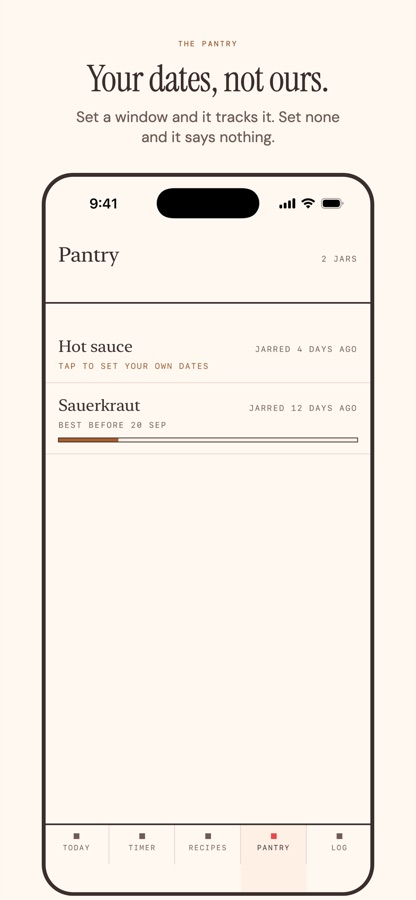
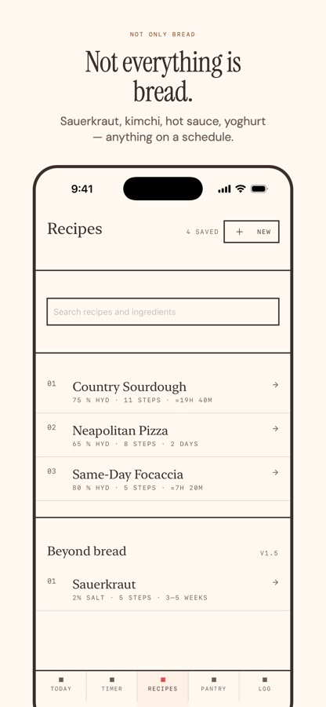
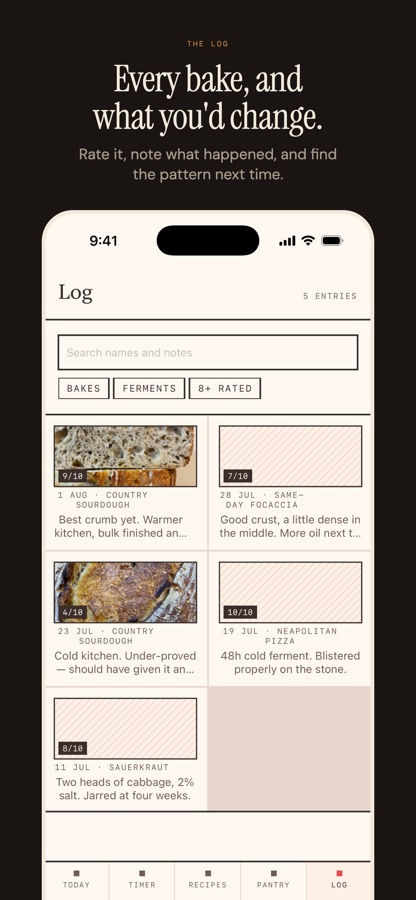

Yeast on East
It works out the rest of the day — every fold, every rest, the bake, and what time the loaf comes out.
One-time unlock · No subscription
Most bake timers are a stopwatch with extra steps. This one knows that a 24°C kitchen ferments faster than a 19°C one, and rebuilds the whole schedule around it.





Built around your start time, not a fixed plan
Pick a recipe, say when you're starting, and every step lands on a real clock time. Change one thing and the rest moves with it.
A cold kitchen gets a longer bulk
Log your dough temperature and the timings adjust. Between 15°C and 35°C, because outside that the honest answer is a cold retard, not a number.
A 4am fold wakes you up. A pantry nudge doesn't.
Bake alerts ignore quiet hours, because that's the whole point. Everything else respects them. Miss one and the app re-plans the rest instead of pretending it didn't happen.
Sauerkraut, kimchi, hot sauce, yoghurt
Anything that ferments on a schedule. Finished jars go to the pantry with the dates you set — never a shelf life the app invented.
No account, no server, nothing to sign in to
Your recipes and bake log stay on your device. There's no backend to send them to, and no analytics watching you bake.
This app only tracks time—it does not measure safety. Fermentation safety depends entirely on salt, acidity, temperature, and submersion. Use your own judgment. When in doubt, throw it out.
Free to use, with room for three of your own recipes. A one-time unlock lifts that to as many as you like. Timers, alerts, the widget, Live Activity, pantry, log and photos are free and stay free.
Not a subscription. There's nothing to cancel.